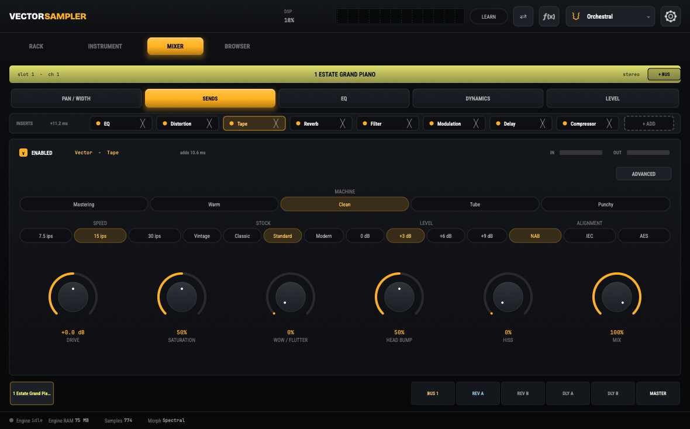

SeyerTape
A fully algorithmic analog-tape coloration module for Larry Seyer Drums and IDA — the warmth, saturation, and gentle movement of classic reel-to-reel tape, applied where you want it.
The Idea
Tape gives a mix glue, warmth, and a subtle sense of motion that purely digital signal paths lack. SeyerTape models that behavior algorithmically — no samples, no convolution — and runs not as a single effect on the master but as always-on instances: one on the master bus and one on each player bus. In Larry Seyer Drums Version 1.0 those player buses are drum buses; each player’s kit can be colored independently before everything glues together at the master.
It is built as a shared module so Larry Seyer Drums and IDA behave identically, and it follows the same strict real-time rules as the host engine — no allocations, locks, logging, or file I/O on the audio thread.
Key Features
- Magnetic-saturation modelingA physically-modeled tape-magnetization stage produces musical harmonic saturation and soft compression that intensifies as you push the input harder
- Selectable tape characterMultiple generic machine and tape-formulation profiles, each shifting saturation depth, frequency emphasis, and noise character
- Tape-speed emphasis EQA per-machine filter cascade (head-bump low end, high-frequency roll-off, optional resonance) whose voicing shifts with the selected tape speed
- Wow and flutterSubtle pitch and timing movement from modeled transport instability, available free-running or synced to project tempo
- Authentic noise behaviorModeled hiss and program-dependent modulation noise that ducks with the signal envelope, tuned per profile
- Tape-stop effectA triggered, musical pitch-and-filter slow-down and restart with no clicks
- Quality tiers and level matchingSelectable processing quality with loudness-matched input/output gain, so you hear coloration, not just a volume change
Part of the Larry Seyer Drums / IDA Signal Path
SeyerTape is one of several effects modules built for the Larry Seyer Drums and IDA engines. The same engine is also packaged as a standalone VST3, AU, CLAP, and AUv3 plugin in LOUIS, so it can be used on any track in any DAW.
Larry Seyer Compressor Larry Seyer Reverb LOUIS Larry Seyer Drums
The Engine
SeyerTape today runs as an insert inside the instruments it was built for. LOUIS is the same engine wrapped as a standalone plugin.
